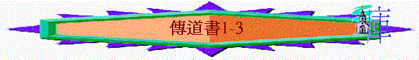

|
人
生 的 意 義 |
|||
|
引言 |
勞碌的價值 |
意義的人生 |
總結 |
|
1:1 |
1:1-6:12 |
7:1-12:7 |
12:8-14 |
I.本書的緒論
「在耶路撒冷作王、大衛的兒子、傳道者的言語。」傳1:1
1.書名：
A.希伯來文：Koheld----
大會�堶捱t講之人
B.希臘文：Ecclesiastes
---- 大會演講之人，而此大會與「教會」(Ecclesia)
同一意思，指召集會眾的大會。
C.中文：傳道書
---- 同本書傳道者的言語，傳道者說(用了七次)有關，是傳道者的說話，是講道理之書，內容是講道的，會眾應留心細聽。
2.地位：
〜有五卷書，稱為五經卷：雅歌、路得記、耶利米哀歌、以斯帖記、傳道書，在大節期中，時常被頌讀，可見其重要。
〜在住棚節，更會讀傳道書，可能提醒選民，人生如寄居，一切都虛空，在神中才有永恆。
3.內容
A.勞碌的價值
「人一切的勞碌，就是他在日光之下的勞碌，有什麼益處呢？」傳1:3
「這樣看來，做事的人在他的勞碌上有什麼益處呢？」傳3:9
「他來的情形怎樣，他去的情形也怎樣。這也是一宗大禍患。他為風勞碌有什麼益處呢？」傳5:16
〜本書超過23次題及「勞碌」，另外常有「勞碌有甚麼益處呢？」字眼，人的勞碌指在日光之下(太陽照耀的地上)人類一切活動(即人生)作者專心探求人生，人所作的有甚麼價值與意義。
B.虛空的肯定
「傳道者說：虛空的虛空，虛空的虛空，凡事都是虛空。」傳1:2
「我見日光之下所做的一切事，都是虛空，都是捕風。」傳1:14
「傳道者說：「虛空的虛空，凡事都是虛空。」」傳12:8
〜「虛空」此字已超過30多次出現在本書中，當作者用不同角度探求日光之下的事情後，他深體會原來一切皆虛空，沒甚麼能叫人滿意，沒甚麼能「捉得實」，如捕風一樣。
C.智慧的人生
「智慧人的心在遭喪之家；愚昧人的心在快樂之家。」傳7:4
「因為智慧護庇人，好像銀錢護庇人一樣。惟獨智慧能保全智慧人的生命。這就是知識的益處。」傳7:12
「凡遵守命令的，必不經歷禍患；智慧人的心能辨明時候和定理（原文作審判；下節同）。」
傳8:5
「再者，傳道者因有智慧，仍將知識教訓眾人；又默想，又考查，又陳說許多箴言。」傳12:9
「這些事都已聽見了，總意就是：敬畏神，謹守他的誡命，這是人所當盡的本分（或作：這是眾人的本分）。」傳12:13
〜若本書單停留在虛空中，似乎是消極、悲觀，但內容卻題及「智慧」，「智慧」此詞在書中
超過43次以上，比「虛空」更多，原來在日光之下的虛空中，仍可活得有「智慧」，人若
在地用智慧生活，必可以活得更有意義、更積極，更蒙福。
〜而書中的智慧是要人「敬畏神」「謹守神的話」「享受神給人的分」，這就是真「智慧」了。
4.主題
「人一切的勞碌，就是他在日光之下的勞碌，有什麼益處呢？」1:3
「我專心用智慧尋求、查究天下所做的一切事，乃知神叫世人所經練的是極重的勞苦。」1:13
「我心裡察究，如何用酒使我肉體舒暢，我心卻仍以智慧引導我；又如何持住愚昧，等我看明世人，在天下一生當行何事為美。」2:3
「我轉念觀看智慧、狂妄，和愚昧。在王以後而來的人還能做什麼呢？也不過行早先所行的就是了。」2:12
「我轉念，一心要知道，要考察，要尋求智慧和萬事的理由；又要知道邪惡為愚昧，愚昧為狂妄。」7:25
「我專心求智慧，要看世上所做的事。（有晝夜不睡覺不合眼的。）」8:16
〜根據上文內容，本書主題是「人生的意義」，作者用其智慧、思想、經歷探求萬事之理，人所作的事，探求價值，意義的問題。
〜其目的說明萬事皆虛空，一切都會消失，被人忘記，既是虛空，人既然要回到神身邊，餘下的日子應要敬畏神，應要活得更有智慧、意義！
5.作者
「在耶路撒冷作王、大衛的兒子、傳道者的言語。」傳1:1
「我傳道者在耶路撒冷作過以色列的王。」傳1:12
「我心裡議論說：我得了大智慧，勝過我以前在耶路撒冷的眾人，而且我心中多經歷智慧和知識的事。」傳1:16
「我買了僕婢，也有生在家中的僕婢；又有許多牛群羊群，勝過以前在耶路撒冷眾人所有的。」傳2:7
「這樣，我就日見昌盛，勝過以前在耶路撒冷的眾人。我的智慧仍然存留。」傳2:9
「論到吃用、享福，誰能勝過我呢？」傳2:25
「所羅門因為求這事，就蒙主喜悅。神對他說：「你既然求這事，不為自己求壽、求富，也不求滅絕你仇敵的性命，單求智慧可以聽訟，我就應允你所求的，賜你聰明智慧，甚至在你以前沒有像你的，在你以後也沒有像你的。你所沒有求的，我也賜給你，就是富足、尊榮，使你在世的日子，列王中沒有一個能比你的。」王上3:10-13
〜本書的作者明顯是所羅門，他是大衛的兒子，是耶路撒冷的王，他曾得大智慧，他所有的財物、尊榮，沒人可比的。
〜的確，由一個全世界最有智慧，擁有最多，所作的沒人能及，也是神所喜悅的人探索人生意義、勞碌、財富價值，怎樣過得有智慧……最適合不過。
6.結構
「傳道者說：「虛空的虛空，凡事都是虛空。」再者，傳道者因有智慧，仍將知識教訓眾人；又默想，又考查，又陳說許多箴言。」傳12:8-9
〜按傳12:8-9及本書內容看，明顯分了兩大段落
A.第一段(1-6) →
探求勞苦的價值：全書「勞苦」「虛空」的字眼集中在1-6章中，作者用不同角度分析、研究、思索人在日光之下所作的意義，結果發現是虛空。
B.第二段(7-12)
→ 講出智慧的人生：全書「智慧」字眼多在此段中出現，少了「虛空」「勞苦」字眼，多了「敬畏」「神」字，作者講出人在世可活得更有智慧，更能在神面前交美好賬的。
〜所以有以下大綱內容
主題：人生的意義
引言(1:1)
一.勞碌的價值
→
全皆虛空(1:2-6:12)
1.
從歷史角度來看
2.
從自己角度來看
3.
從定律角度來看
4.
從比較角度來看
5.
從禍患角度來看
二.意義的人生
→
需有智慧(7:1-12:7)
1.
智慧的選擇
2.
智慧的探索
3.
智慧的福樂
4.
智慧的局限
5.
至終的出路
總結(12:8-14)
II.全書內容
引言
「在耶路撒冷作王、大衛的兒子、傳道者的言語。」1:1
〜本書不是普通言語的書，而是君王的書，也是全世界無人能比的智者之書，亦是傳講神道之書，人應存尊敬、謙卑的心領受。
一.勞碌的價值
→
全皆虛空(1:2-6:12)
點題(1:2-3)
「在耶路撒冷作王、大衛的兒子、傳道者的言語。傳道者說：虛空的虛空，虛空的虛空，凡事都是虛空。」1:2-3
〜「虛空的虛空」，是希伯來民族的民間成語，重覆用表明虛空到極點，有加強語氣之用。
〜而虛空原來有一口氣，似氣泡意思，最後也沒有，見不到，捉不到，存不到，虛無，是沒有的。
〜而1:14也將「捕風」和「虛空」放在一齊，也似乎感受到風，嘗試捕風，最後也捉不到，是虛的！
〜傳道者一開始形容凡事虛空，日光之下(地上所有事)，一切的勞碌都似乎沒益處，為何有此論點，不是憑空想象，作者用不同的角度研究，分析而得此結論。
1.從歷史角度來看(1:2-15)
「一代過去，一代又來，地卻永遠長存。」1:4
A.世上沒新事
「萬事令人厭煩（或作：萬物滿有困乏），人不能說盡。眼看，看不飽；耳聽，聽不足。已有的事後必再有；已行的事後必再行。日光之下並無新事。」1:8-9
〜萬事令人厭煩，為甚麼呢？因所見所聽，以前的世代已有，根本沒有新事，原來人勞碌所作不是十分偉大新奇之事，以前的世代已有了，所以勞碌有甚麼益處呢？
B.所作沒人念
「已過的世代，無人記念；將來的世代，後來的人也不記念。」1:11
〜人是會忘記的，既無新事，人辛苦所作的，至後來也沒人記得，何等虛空！
C.考究下啟發
〜傳道者查考歷世歷代，人所作的，有以下啟發
a.人經歷的 → 是極其勞苦
「我專心用智慧尋求、查究天下所做的一切事，乃知神叫世人所經練的是極重的勞苦。」1:13
〜人為何勞苦，是神容許的，是神給的(事實人犯罪後，萬物也受勞苦
歎息的咒詛)
〜人所經歷的是極其勞苦
b.人所作的 → 是虛空捕風
「我見日光之下所做的一切事，都是虛空，都是捕風。」1:14
c.人的能力 → 是有所不能
「彎曲的，不能變直；缺少的，不能足數。」1:15
〜在日光之下發生的事，很多已定了，不能改變，人也不能改變，人有他的限制。
〜傳道者在每段角度中，都會對人生有不同的啟發、結論，每一段是上一段的補充，不斷加深，以致讀完整卷傳道書，能一層一層對人生有更深入的剖析。
2.從自己角度來看(1:16-2:26)
〜之後，下一段有很多「我」字，作者嘗試用自己的經歷，自己的所得尋求、勞碌，人在日光之下所作，所想，所行的價值。
〜而此段似乎是作者的人生寫照，從起初至想像晚年的光景。
A.自己所得----智慧----皆虛空(1:16-18)
「我心裡議論說：我得了大智慧，勝過我以前在耶路撒冷的眾人，而且我心中多經歷智慧和知識的事。我又專心察明智慧、狂妄，和愚昧，乃知這也是捕風。因為多有智慧，就多有愁煩；加增知識的，就加增憂傷。」1:16-18
〜所羅門作王不久，他得了智慧，是大智慧，勝過別人，但在日光之下(人的角度)看，也是捕風，因多有智慧，多有愁煩。
B.自己所試----享樂----也虛空(2:1-3)
「我心裡說：「來吧，我以喜樂試試你，你好享福！」誰知，這也是虛空。」2:1
〜作者也試過享樂，也是用智慧下享受，不是沒節制的，但享受過後，似乎不能滿足他，也發現是虛空的！
C.自己所成----昌盛----亦無益(2:4-11)
「我為自己動大工程，建造房屋，栽種葡萄園。」2:4
「這樣，我就日見昌盛，勝過以前在耶路撒冷的眾人。我的智慧仍然存留。」2:9
「後來，我察看我手所經營的一切事和我勞碌所成的功。誰知都是虛空，都是捕風；在日光之下毫無益處。」2:11
〜他得國後，所成就的工業、工程，所得到的財富、僕婢，所得的倡盛勝過以前，但他自已感受都是捕風，對自己有甚麼益處呢？
D.自己所誇----智慧----是捕風(2:12-17)
a.自己所誇的地方
「我便看出智慧勝過愚昧，如同光明勝過黑暗。」2:13
〜他們擁有的智慧，勝過愚昧人
b.至終與愚昧的無異
(1)無人記念
「我就心裡說：「愚昧人所遇見的，我也必遇見，我為何更有智慧呢？」我心裡說，這也是虛空。智慧人和愚昧人一樣，永遠無人記念，因為日後都被忘記；可歎智慧人死亡，與愚昧人無異。」2:15-16
(2)同樣必死
E.自己所留----產業----是大患(2:18-23)
a.辛苦得來的結果是留給後人
「我恨惡一切的勞碌，就是我在日光之下的勞碌，因為我得來的必留給我以後的人。」2:18
b.辛苦得來的果效是累心愁煩
「人在日光之下勞碌累心，在他一切的勞碌上得著什麼呢？因為他日日憂慮，他的勞苦成為愁煩，連夜間心也不安。這也是虛空。」2:22-23
〜所以到晚年，離開世界後，之前所得的，對自己有甚麼益處呢？
F.因而啟發----吃喝享樂(2:24-26)
「人莫強如吃喝，且在勞碌中享福，我看這也是出於神的手。」2:24
〜既然至終自己所得的留給後人，現在應怎樣生活，倒不如享受勞碌中的分----吃喝，也是「神的手」神給的禮物，這不是「享樂放縱」主義，而是在辛苦中享受神的恩，聖經也重視吃喝，在創世記中，人工作的目的是得糊口，而主禱文也題及「我們日用的飲食求父賜給我們」神也願意人在勞苦歎息虛空中享受食物
(但卻要有節制)。
3.從定律角度來看(3)
A.凡事有定期(3:1-15)
a.萬務有定時
「凡事都有定期，天下萬務都有定時。生有時，死有時；栽種有時，拔出所栽種的也有時；
殺戮有時，醫治有時；拆毀有時，建造有時；哭有時，笑有時；哀慟有時，跳舞有時。」3:1-4
「這樣看來，做事的人在他的勞碌上有什麼益處呢？」3:9
〜天下萬務都有它的時候，生有時、死有時、哭有時、笑有時、爭戰有時、和好有時，既然凡事有定期，人的勞碌又可改變甚麼呢？人所作對於定了的事又有甚麼益處？
b.更深的啟會
(1)勞碌背後有美意
「我見神叫世人勞苦，使他們在其中受經練。神造萬物，各按其時成為美好，又將永生（原文作永遠）安置在世人心裡。然而神從始至終的作為，人不能參透。」3:10-11
〜神為何使人勞苦呢？萬物有定時是甚麼意思呢？(包括勞苦有時)作者相信，認定是美好的，是有祂的美意的，正如新約角度，萬事都互相效力，叫愛神的人得益處，而苦也可以試練人，生出忍耐，生出盼望。
(2)虛空之下有永恆
「神造萬物，各按其時成為美好，又將永生（原文作永遠）安置在世人心裡。然而神從始至終的作為，人不能參透。」3:11
〜原來在捉不實的人生中，神早已將永生放在世人心中，不是放在動物中，動物沒有永生，天堂、來世、地獄、永恆觀念，但人天性至深處是有的，所以人會尋求宗教，探索日光之上的永生。
(3)勞苦之內有恩賜
「我知道世人，莫強如終身喜樂行善；並且人人吃喝，在他一切勞碌中享福，這也是神的恩賜。」3:12-13
〜人在勞苦中，亦可以喜樂，亦可以行善，作積極快樂的事情，這也是神的恩賜。
(4)限制之中有學習
「我知道神一切所做的都必永存；無所增添，無所減少。神這樣行，是要人在他面前存敬畏的心。」3:14
〜人有他的限制，神的事情不能參透，不能增加，減少自己的歲數，自己和年日，神所定的事情，但神卻是無限，所作的是永存，有限的人面對這位掌管一切、永恆、限期的神，必然有所學習，要常存敬畏的心迎見祂。
B.審判有定時
a.必有審判
「我又見日光之下，在審判之處有奸惡，在公義之處也有奸惡。我心裡說，神必審判義人和惡人；因為在那裡，各樣事務，一切工作，都有定時。」3:16-17
b.有所啟發
(1)不能再誇
「我心裡說，這乃為世人的緣故，是神要試驗他們，使他們覺得自己不過像獸一樣。因為世人遭遇的，獸也遭遇，所遭遇的都是一樣：這個怎樣死，那個也怎樣死，氣息都是一樣。人不能強於獸，都是虛空。」3:18-19
〜人與獸一樣，也要死，所以人有甚麼可誇呢？所以都是虛空！
(2)在世喜樂
「故此，我見人莫強如在他經營的事上喜樂，因為這是他的分。他身後的事誰能使他回來得見呢？」3:22